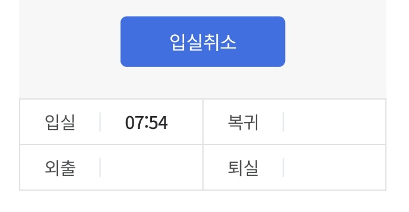

|
|
해당 페이지는 2주차에 한 작업을 조원들에게 공지하고 정리해둔 페이지 입니다.
전 주와 다음주차를 비교하며 어떻게 달라졌는지 확인합시다.
매주 금요일 아침에 마감후 주차가 변경됩니다.
[09-19 월 개발작업]
우선 이번주 작업과 개인 할일이 정해졌습니다.
본인이 작업한html 파일을 jsp파일로 바꿀겁니다.
우선 제것으로 예시를 들건데요.
detail.html이랑 DetailPage.jsp파일이 프로젝트 경로에 있습니다.
html과 동일 경로에 jsp파일을 만들고, 내부에 <!DOCUMENT>아래부분에 html을 그대로 복붙하였습니다.
이렇게 하면 이제 <%= %>같은 jsp구문(스크립틀릿)을 사용할 수 있습니다. 여태 html로 개발하였던 부분의 큰제약었던, 해더 풋터 불러오기 같은 구문이 간단(include)해지고, DB를 사용할 첫 걸음이 됩니다.
이후, 서블릿작업을 통해 서로의 페이지를 연결하고, 지금은 죽어(?)있는 버튼과 링크들이 유기적으로 연결되게 됩니다. json형태로 받아서 사용하던, 더미데이터도 jsp작업이 끝난후에 DB에서 정상적으로 사용할 수 있습니다.
그리고 json으로 작업중이니 DB관련 정의가 어려워서 레이아웃이나 개발 아이디어에 제약이 있다고 하신 분이 있는데, 아이디어를 내는 사람만 아이디어를 내고, 개발하는 사람은 개발만 하는게 아니라 모두가 아이디어를 내고, 모두가 개발을 해야합니다. 자신이 맡은 페이지가 부족해보인다면 다른사이트를 참고하여 꾸미고, JSON에 추가하여 페이지에 DB를 구상하면서 진행하셔야합니다. 아이디어를 정리하면서 개발하세요.
우선 점심전까지 서블릿 기초와 DTO DAO파일을 만들예정입니다. 그리고 책이미지 사이즈가 전부달라 사이트모양이 책마다 다른 문제가 있어 이를 수정해둘태니, 점심시간이 지난 후 13시 20분에 pull하신 후 작업 해 주세요.
[09-20 화 개발작업]
저희는 단계별로 프로젝트 개발을 하고 있습니다.
기본(중요)기능이 들어갈 페이지 몇개를 우선 만든 후 이 몇페이지로 생긴 개발 경험을 토대로 디자인, 노하우, 등을 정의해서 추가페이지와 기능을 늘려나가는 방식으로 개발할건데요.
저번주엔 html로 우선 레이아웃을 정의하고, 몇몇 페이지를 만드는 작업을 했습니다. 다만, html로 작업시 a태그의 href로 페이지를 연결해서, 모든 책의 소개페이지를 만들어야하는 등 DB(서버)사용에 어려움이 있기에 더미데이터를 JSON형태로 해서 페이지의 기능을 간략하게 테스트 했습니다.
이번주는 JSP로 이전하는 작업과 거기에 맞게 서블릿을 정의한 후 각 페이지의 기능을 구현하는 작업을 할려 했으나, 이 과정에서 저희조는 개발력(?) 편차가 큰편이라고 느꼈습니다.
기능개발에 있어서는 이 편차를 해결하지 않는 한 개발에 큰 애로사항이 있다고 여겨, 이를 해결하기 위해 어제 투표를 진행한 결과 1번 [프로젝트 우선 방식]이 뽑혔습니다.
하지만, 이방식은 개발력이 높은 사람이 선발대로서 우선 개발을 하고 나머지 조원들이 이를 뒤따라가는 방식입니다. 이방식으론 조원들은 실력적 향상이 없고, 기여도의 분배 문제가 생길 수 밖에 없습니다. 그래서 저는 이방식보다, 2번 [과제, 스터디 방식]으로 프로젝트를 진행할려고 합니다.
이럴꺼면 '어제 투표 왜했냐?!' 하시겠지만, 프로젝트 진행에 있어 필요한 과정이라고 생각합니다. 싫으면 조장하세요.
이제부터 '과제형 프로젝트 진행 방식'으로 명명하겠습니다. 제가 오전에 당일 개발할 기능에 맞는 부분을 가르쳐주면, 이를 활용해서 본인이 만든(html)페이지를 jsp화 하고, 서블릿을 만들어서 페이지 간 연결을 구현합니다.
어제 몇몇 조원과 얘기를 나눈결과 get post방식이나, innerHTML, getParameter()같은 기본적인 구문조차 잡혀있지 않은 모습을 보였습니다.
오늘은 이를 활용하여 본인이 만든페이지 간의 연결을 구현 할 예정입니다.
[09-21 수 개발작업]
안녕하세요. 조장 이현우 입니다.
어제는 모든 페이지를 jsp로 옮기고, 본격적인 서블릿작업에 들어가게 되었는데요.
저희조는 UI정의서 부실한 상태에서 시작을 해서인지, 개발에 조금씩 차질이 생기고 있습니다. 오늘 중으론 서블릿작업을 완료 후 페이지 이동은 완벽하게 구현하고 싶습니다. 서블릿과 페이징 작업이 끝나면, UI 디자인 작업에 들어가기 앞서, 개발과정을 정리하고, 간략하게라도 DB를 구상해서 기능과 레이아웃을 교정할 예정입니다.
개발을 하실 때, 본인이 만들고 싶은 페이지를 만들면됩니다. 본인이 이쁘다고, 편하다고, 있어야한다고 생각하는 부분을 개발하면 됩니다. 하지만, 내가 만드는 페이지에 무슨기능과 디자인(레이아웃)이 어울릴지 복합적으로 생각하면서 개발하세요.
오늘은 어제와 마찬가지로 서블릿 작업을 통해 페이지 연결 기능을 구현할 예정입니다. 이과정에서 자신이 개발하지 않은 페이지를 손대야할 수 있습니다.
예를 들어 제가 만든 리스트페이지에서 form을 전송받아야 본인의 결제페이지에서 띄어야할 경우 같이 다른 조원이 만든 페이지에서 수정할 일이 있을 경우 상대가 작업하고있는 부분이 안겹치게 해당 페이지를 개발한 조원과 상담후에 수정 혹은 개발을 요구하시면 될거같습니다. 물어보지 않고 개발한 후 커밋 과정에서 초기화 되는 일이 없게 조심합시다.
그리고 이건 여담이지만, 저희 페이지의 컨셉을 잡고자 메인페이지를 간략하게 만들어봤습니다. 이 페이지와 비슷한 색감과 분위기, 컨셉을 통일해서 페이지간의 이질감을 줄여 보고자 합니다.
열심히 만들었으니 다들 한번씩 봐주시고, 다양한 의견 부탁드립니다.
(저는 해당 페이지의 색감을 좀 조정하고 싶습니다. 너무 찐보라 아닌가...)
아직 UI 디자인은 하지않을 예정이고, 컨셉 단계이니 보시고 '아~ 이렇게 만들고 싶어하는구나...'정도만 캐치해 주시면 감사하겠습니다.
오늘 개발작업도 열심히 합시다.
[09-22 목 개발작업]

안녕하세요 여러분. 위에 사진은 신경 쓰지마세요.
오늘은 목요일입니다. 오늘 목요일 맞냐? 맞네...
저희 학원은 매주 금요일 오전에 조별 중간발표가 있기 때문에 사실상 오늘이 2주차 개발의 마지막 날이고, 금요일은 3주차에 들어갈 예정입니다.
조원 여러분이 학원에서 메이플하지 않고, 맡은바 자리에서 열심히 하는것은 잘 알고있습니다만,
처음 이번주에 할려 했던 부분인 기본 페이지 연결기능이 아직까진 시원찮다고 생각합니다. 오늘중으로 완벽하게 완성해서 페이징기능이 동작하도록 합시다.
이게 전부 제 ListPage가 늦어져서 그렇습니다.ㅠㅠ
오늘중으론 마무리 한다고 생각하고 가다듬읍시다. 그리고 내일 다시한번 조원들과 DB와 페이지 디자인, UI, 등을 다시 정리하고 추가할 부분 추가하고, 테이블도 짜고, 완성도를 더 높일 예정입니다.
이것과는 별개로 페이지 컨셉이 없어 각페이지의 컨셉이 혼제되어있는 문제가 있었는데요. 어제 예시페이지를 만들면서 나름의 디자인 템플릿을 만들어두었으니, 이 규격에 맞춰 페이지 디자인을 통합하도록 합시다.(마음에 안드는 부분이나, 수정할 부분이 있을 경우 부담 없이 말해주세요. 조에서 잘라버리게)
그럼 오늘도 열시히 합시다.
|